“The greatest value of a picture is when it forces us to notice what we never expected to see.” -John W. Tukey
Biases, systematic errors and unexpected variability are common in data from the life sciences. Failure to discover these problems often leads to flawed analyses and false discoveries. As an example, consider that experiments sometimes fail and not all data processing pipelines, such as the t.test function in R, are designed to detect these. Yet, these pipelines still give you an answer. Furthermore, it may be hard or impossible to notice an error was made just from the reported results.
Graphing data is a powerful approach to detecting these problems. We refer to this as exploratory data analysis (EDA). Many important methodological contributions to existing techniques in data analysis were initiated by discoveries made via EDA. In addition, EDA can lead to interesting biological discoveries which would otherwise be missed through simply subjecting the data to a battery of hypothesis tests. Through this book, we make use of exploratory plots to motivate the analyses we choose. Here we present a general introduction to EDA using height data.
We have already introduced some EDA approaches for univariate data, namely the histograms and qq-plot. Here we describe the qq-plot in more detail and some EDA and summary statistics for paired data. We also give a demonstration of commonly used figures that we recommend against.
Histogram
library(rafalib)
Warning: package 'rafalib' was built under R version 4.5.3
data(father.son,package="UsingR") ##available from CRANx <- father.son$fheighthist(x, breaks=seq(floor(min(x)), ceiling(max(x))), main ="Height histogram", xlab ="Height in inches")
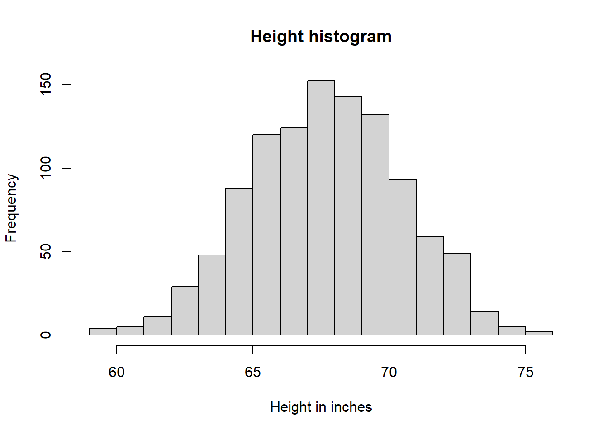
# Emperical cumulative distribution function (ecdf)# It reports for any given number the percent of individuals that are below that thresholdxs <-seq(floor(min(x)), ceiling(max(x)), 0.1)plot(xs, ecdf(x)(xs), type ="l", xlab ="Height in inches", ylab ="f(x)")
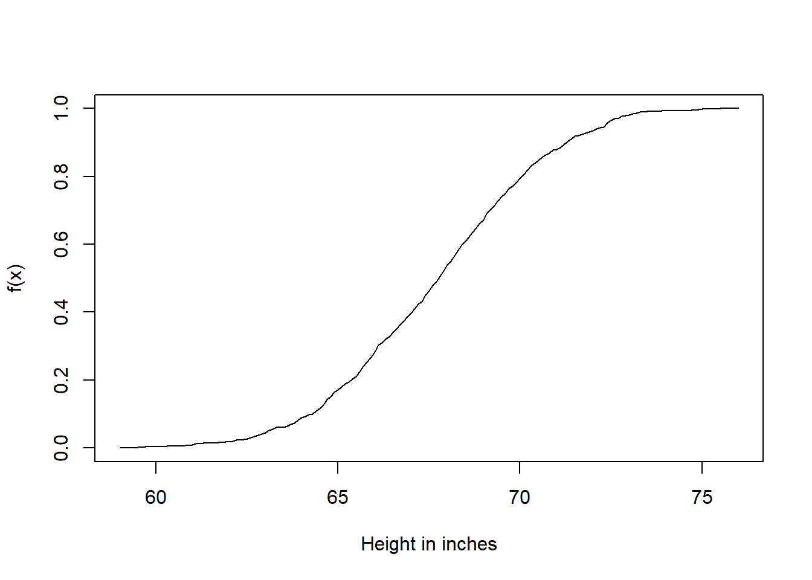
Quantile Quantile Plots
To corroborate that a theoretical distribution, for example the normal distribution, is in fact a good approximation, we can use quantile-quantile plots (qq-plots). Quantiles are best understood by considering the special case of percentiles. The p-th percentile of a list of a distribution is defined as the number q that is bigger than p% of numbers (so the inverse of the cumulative distribution function we defined earlier). For example, the median 50-th percentile is the median. We can compute the percentiles for our list of heights:
library(rafalib)data(father.son,package="UsingR") ##available from CRANx <- father.son$fheight
and for the normal distribution:
ps <- ( seq(0,99) +0.5 )/100# A quantile divides a sorted dataset into continuous, equal-sized intervalsqs <-quantile(x, ps)normalqs <-qnorm(ps, mean(x), popsd(x))plot(normalqs,qs,xlab="Normal percentiles",ylab="Height percentiles")abline(0,1) ##identity line
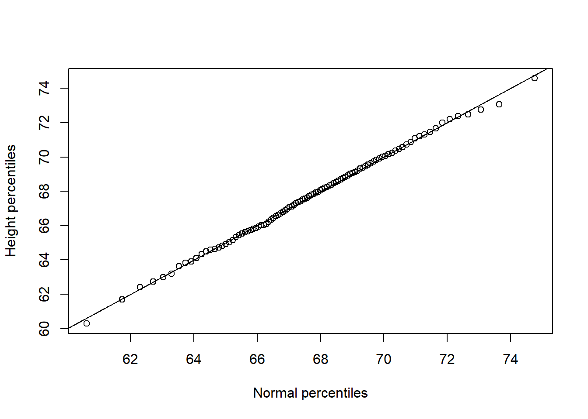
First example of qqplot. Here we compute the theoretical quantiles ourselves.
Note how close these values are. Also, note that we can see these qq-plots with less code (this plot has more points than the one we constructed manually, and so tail-behavior can be seen more clearly).
qqnorm(x)qqline(x)
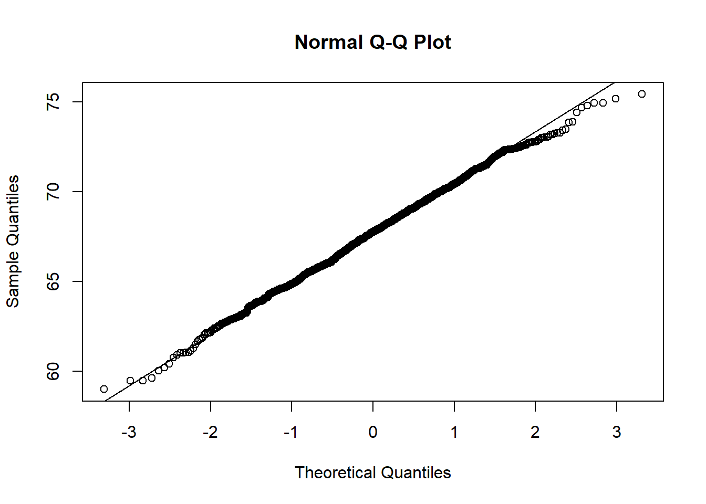
Second example of qqplot. Here we use the function qqnorm which computes the theoretical normal quantiles automatically.
However, the qqnorm function plots against a standard normal distribution. This is why the line has slope popsd(x) and intercept mean(x).
In the example above, the points match the line very well. In fact, we can run Monte Carlo simulations to see plots like this for data known to be normally distributed.
n <-1000x <-rnorm(n)qqnorm(x)qqline(x)
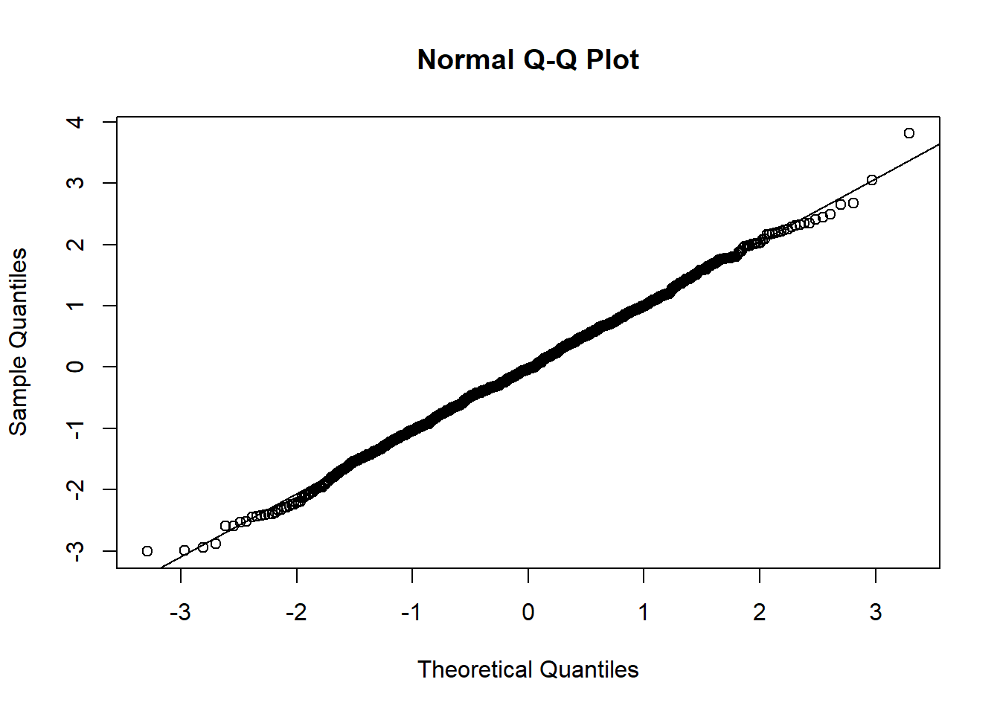
Example of the qqnorm function. Here we apply it to numbers generated to follow a normal distribution.
We can also get a sense for how non-normally distributed data will look in a qq-plot. Here we generate data from the t-distribution with different degrees of freedom. Notice that the smaller the degrees of freedom, the fatter the tails. We call these “fat tails” because if we plotted an empirical density or histogram, the density at the extremes would be higher than the theoretical curve. In the qq-plot, this can be seen in that the curve is lower than the identity line on the left side and higher on the right side. This means that there are more extreme values than predicted by the theoretical density plotted on the x-axis.
dfs <-c(3,6,12,30)mypar(2,2)for(df in dfs){ x <-rt(1000,df)qqnorm(x,xlab="t quantiles",main=paste0("d.f=",df),ylim=c(-6,6))qqline(x)}
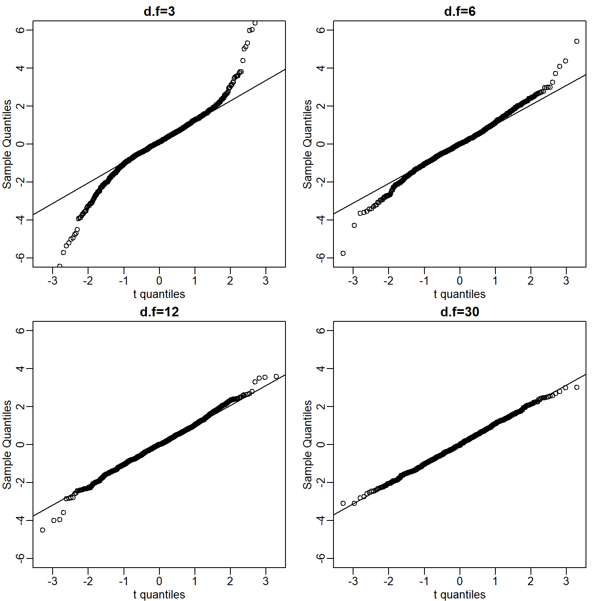
We generate t-distributed data for four degrees of freedom and make qqplots against normal theoretical quantiles.
mypar(1,1)
Boxplots
Data is not always normally distributed. Income is a widely cited example. In these cases, the average and standard deviation are not necessarily informative since one can’t infer the distribution from just these two numbers. The properties described above are specific to the normal. For example, the normal distribution does not seem to be a good approximation for the direct compensation for 199 United States CEOs in the year 2000.
In addition to qq-plots, a practical summary of data is to compute 3 percentiles: 25th, 50th (the median) and the 75th. A boxplot shows these 3 values along with a range of the points within median \(\pm\) 1.5 (75th percentile - 25th percentile). Values outside this range are shown as points and sometimes referred to as outliers.
boxplot(exec.pay, ylab="10,000s of dollars", ylim=c(0,400))
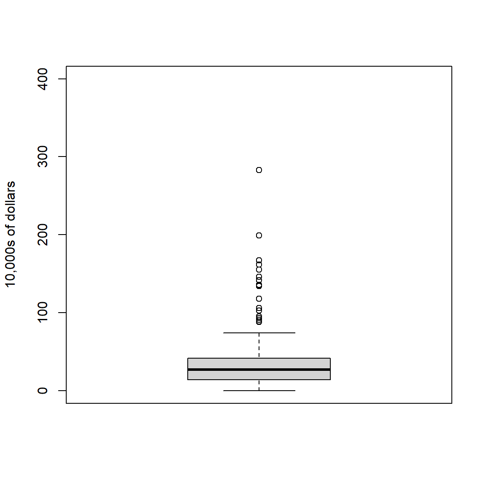
Simple boxplot of executive pay.
Here we show just one boxplot. However, one of the great benefits of boxplots is that we could easily show many distributions in one plot, by lining them up, side by side. We will see several examples of this throughout the book.
Scatterplots and Correlation
The methods described above relate to univariate variables. In the biomedical sciences, it is common to be interested in the relationship between two or more variables. A classic example is the father/son height data used by Francis Galton to understand heredity. If we were to summarize these data, we could use the two averages and two standard deviations since both distributions are well approximated by the normal distribution. This summary, however, fails to describe an important characteristic of the data.
data(father.son,package="UsingR")x=father.son$fheighty=father.son$sheightplot(x,y, xlab="Father's height in inches", ylab="Son's height in inches", main=paste("correlation =",signif(cor(x,y),2)))
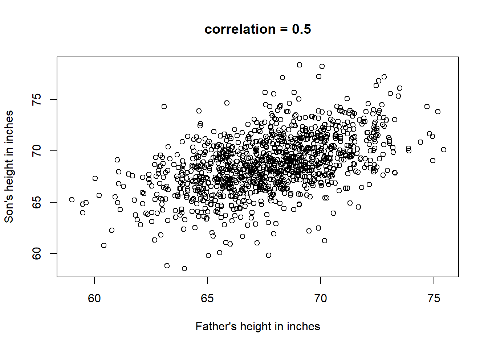
Heights of father and son pairs plotted against each other.
The scatter plot shows a general trend: the taller the father, the taller the son. A summary of this trend is the correlation coefficient, which in this case is 0.5. We will motivate this statistic by trying to predict the son’s height using the father’s height.
Stratification
Suppose we are asked to guess the height of randomly selected sons. The average height, 68.7 inches, is the value with the highest proportion (see histogram) and would be our prediction. But what if we are told that the father is 72 inches tall, do we still guess 68.7?
The father is taller than average. Specifically, he is 1.75 standard deviations taller than the average father. So should we predict that the son is also 1.75 standard deviations taller? It turns out that this would be an overestimate. To see this, we look at all the sons with fathers who are about 72 inches. We do this by stratifying the father heights.
groups <-split(y,round(x)) boxplot(groups)
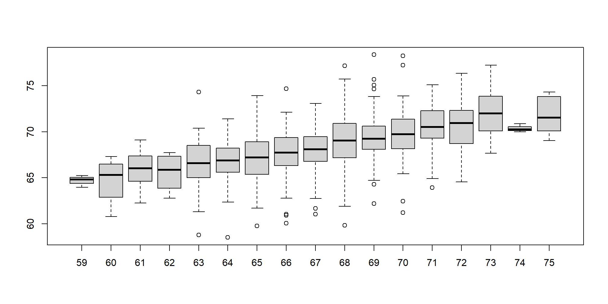
Boxplot of son heights stratified by father heights.
print(mean(y[ round(x) ==72]))
[1] 70.67719
Stratification followed by boxplots lets us see the distribution of each group. The average height of sons with fathers that are 72 inches tall is 70.7 inches. We also see that the medians of the strata appear to follow a straight line (remember the middle line in the boxplot shows the median, not the mean). This line is similar to the regression line, with a slope that is related to the correlation, as we will learn below.
Bivariate Normal Distribution
Correlation is a widely used summary statistic in the life sciences. However, it is often misused or misinterpreted. To properly interpret correlation we actually have to understand the bivariate normal distribution.
A pair of random variables \((X,Y)\) is considered to be approximated by bivariate normal when the proportion of values below, for example \(a\) and \(b\), is approximated by this expression:
This may seem like a rather complicated equation, but the concept behind it is rather intuitive. An alternative definition is the following: fix a value \(x\) and look at all the pairs \((X,Y)\) for which \(X=x\). Generally, in statistics we call this exercise conditioning. We are conditioning \(Y\) on \(X\). If a pair of random variables is approximated by a bivariate normal distribution, then the distribution of \(Y\) conditioned on \(X=x\) is approximated with a normal distribution, no matter what \(x\) we choose. Let’s see if this holds with our height data. We show 4 different strata:
groups <-split(y,round(x)) mypar(2,2)for(i inc(5,8,11,14)){qqnorm(groups[[i]],main=paste0("X=",names(groups)[i]," strata"),ylim=range(y),xlim=c(-2.5,2.5))qqline(groups[[i]])}
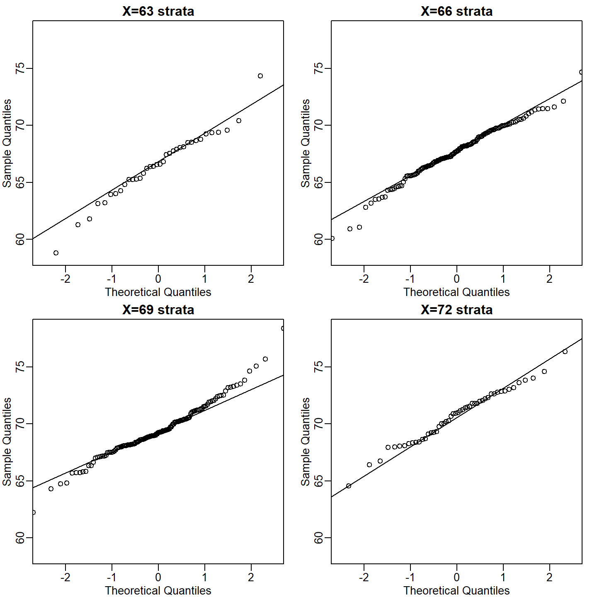
qqplots of son heights for four strata defined by father heights.
Now we come back to defining correlation. Mathematical statistics tells us that when two variables follow a bivariate normal distribution, then for any given value of \(x\), the average of the \(Y\) in pairs for which \(X=x\) is:
Note that this is a line with slope \(\rho \frac{\sigma_Y}{\sigma_X}\). This is referred to as the regression line. If the SDs are the same, then the slope of the regression line is the correlation \(\rho\). Therefore, if we standardize \(X\) and \(Y\), the correlation is the slope of the regression line.
Another way to see this is to form a prediction \(\hat{Y}\): for every SD away from the mean in \(x\), we predict \(\rho\) SDs away for \(Y\):
If there is perfect correlation, we predict the same number of SDs. If there is 0 correlation, then we don’t use \(x\) at all. For values between 0 and 1, the prediction is somewhere in between. For negative values, we simply predict in the opposite direction.
To confirm that the above approximations hold in this case, let’s compare the mean of each strata to the identity line and the regression line:
x=( x-mean(x) )/sd(x)y=( y-mean(y) )/sd(y)means=tapply(y, round(x*4)/4, mean)fatherheights=as.numeric(names(means))mypar(1,1)plot(fatherheights, means, ylab="average of strata of son heights", ylim=range(fatherheights))abline(0, cor(x,y))
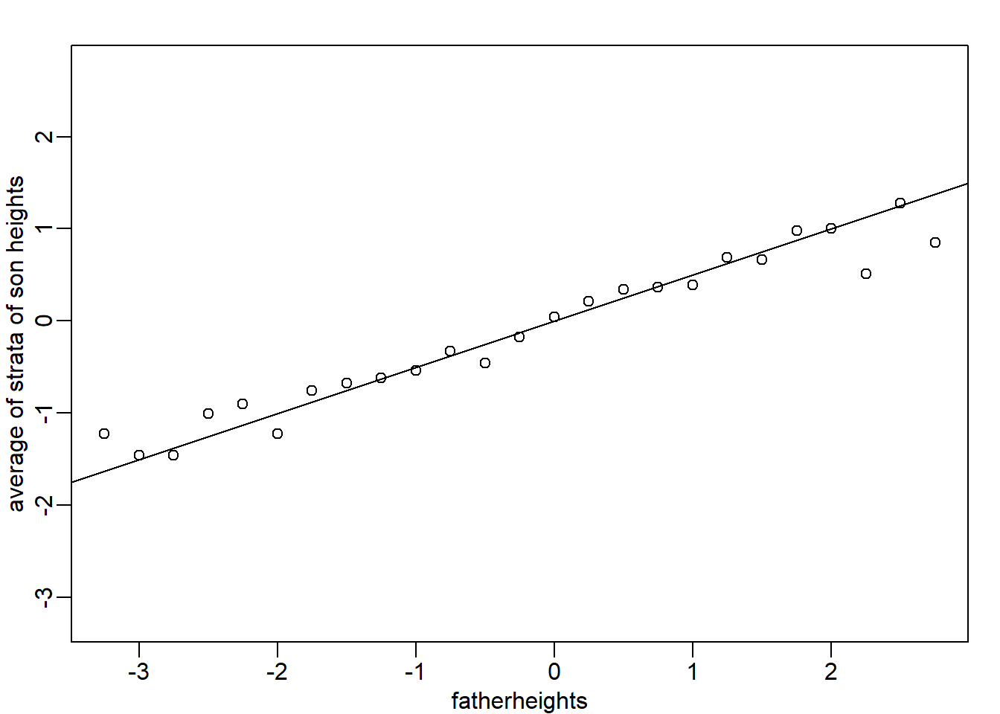
Average son height of each strata plotted against father heights defining the strata
Variance explained
The standard deviation of the conditional distribution described above is:
\[
\sqrt{1-\rho^2} \sigma_Y
\]
This is where statements like \(X\) explains \(\rho^2 \times 100\) % of the variation in \(Y\): the variance of \(Y\) is \(\sigma^2\) and, once we condition, it goes down to \((1-\rho^2) \sigma^2_Y\) . It is important to remember that the “variance explained” statement only makes sense when the data is approximated by a bivariate normal distribution.